I participated at the Utah Teapot Rendering competition 2015 held at University of Utah and my image has won two awards.
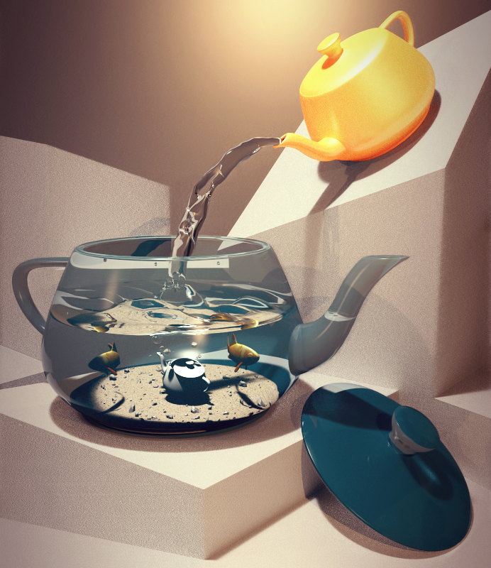
Image for Teapot Rendering Competition
Following images have been generated using my multi threaded raytracer built using c++
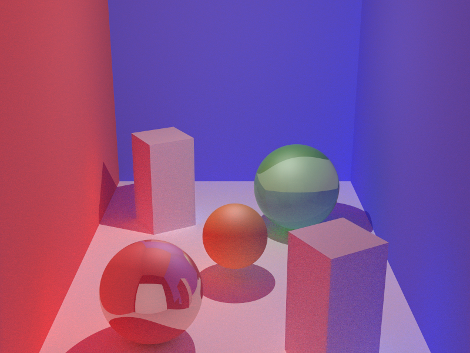
Path Tracer

Monte Carlo GI
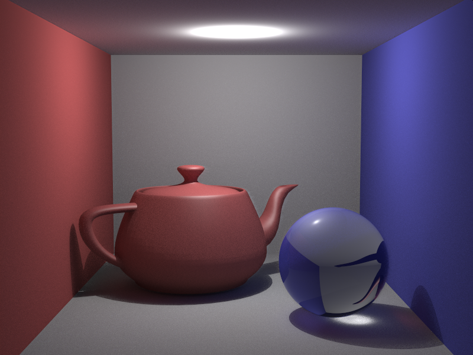
Monte Carlo GI
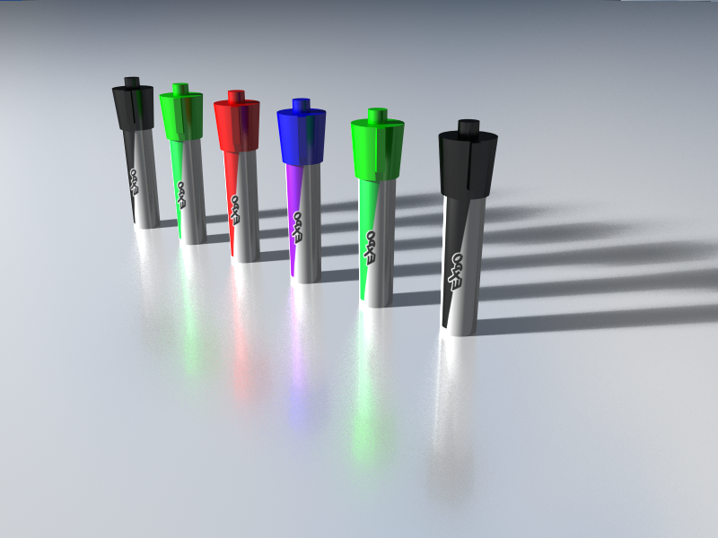
Soft Shadows and Glossy Surfaces
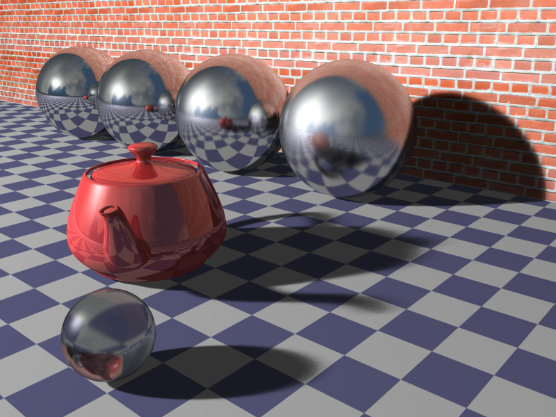
Soft Shadows and Glossy Surfaces
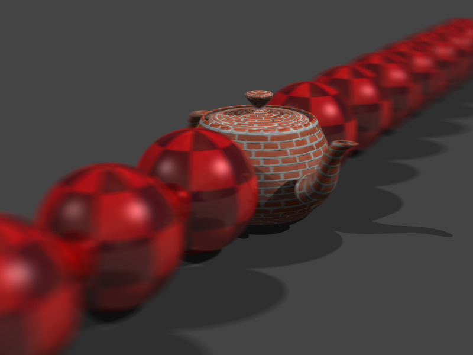
Depth of Field

Antialiasing
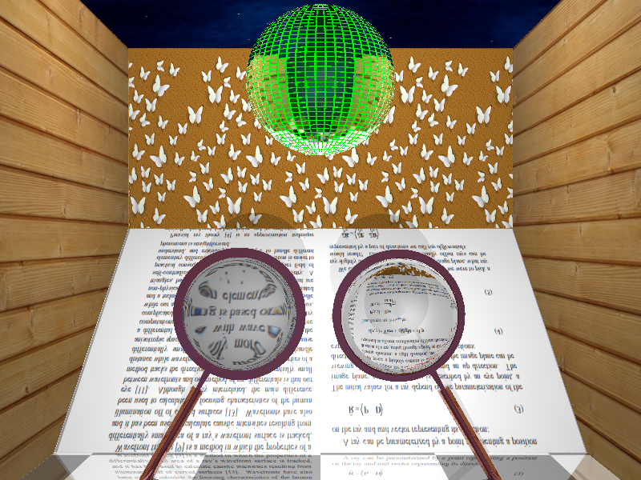
Textures
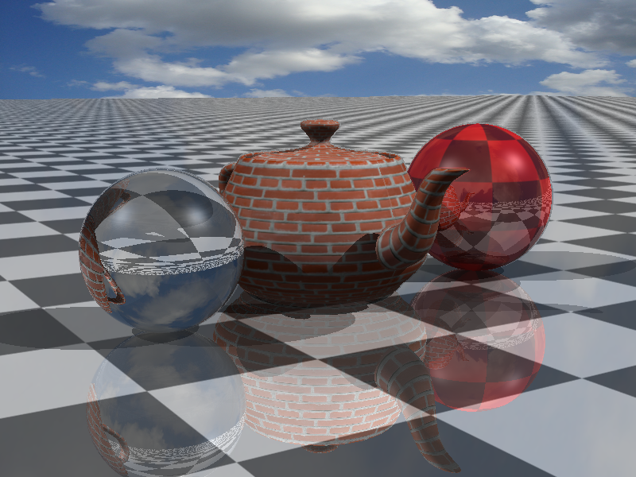
Textures
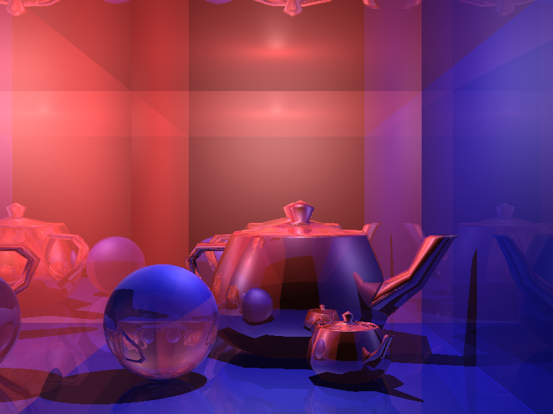
Triangular Meshes
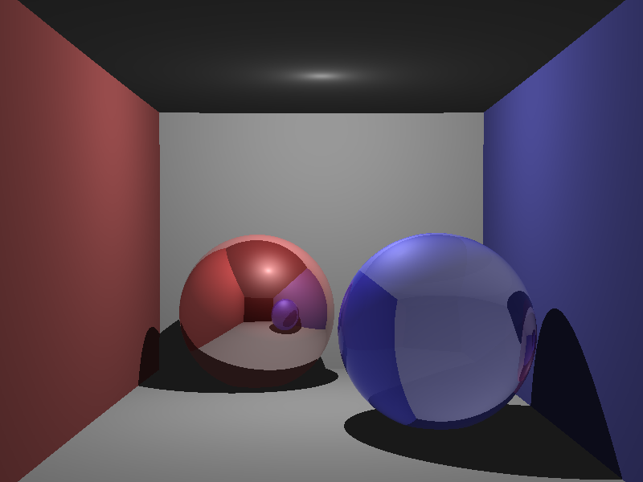
Reflections and Refractions
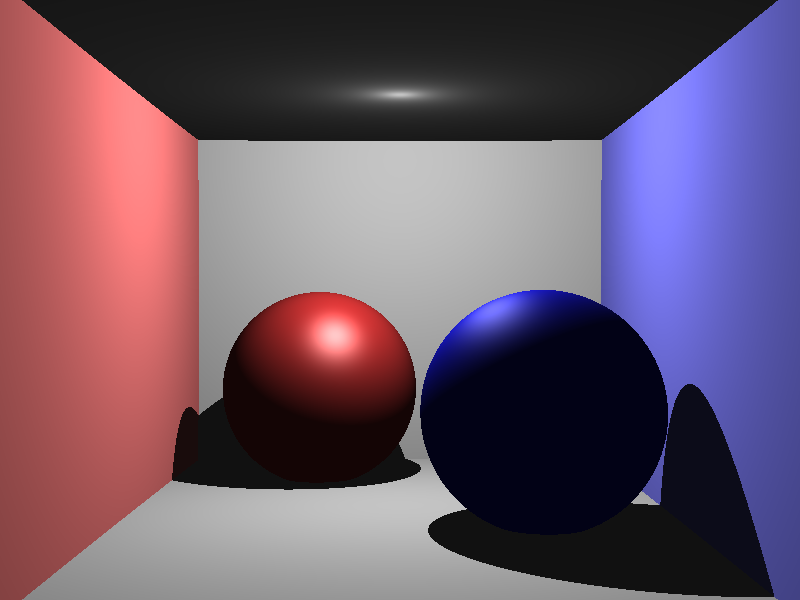
Shadows
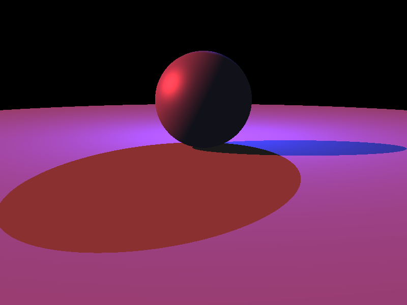
Shadows
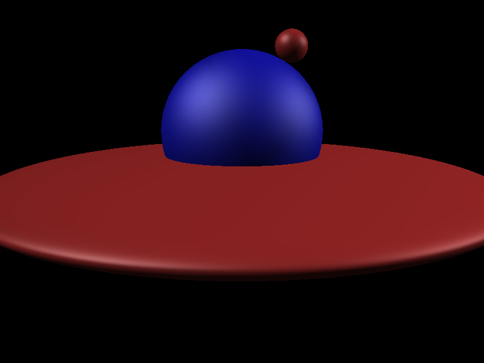
Blinn-Phong Shading
Basic RayTracer